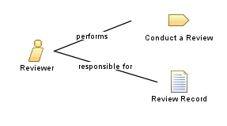

|
| This role provides timely feedback to project team members on the work products they have submitted for review. |
| Role Sets: Environment |
|
Relationships
 |
| Primary Performs |
|
| Modifies |
|
Main Description
|
Any member of the project team can take on the Reviewer role, as long as they have the appropriate pre-requisite
skills. For reviews that involve multiple team members, one person playing this role will also need to take
responsibility for coordinating the review process itself , playing the Review Coordinator role. Reviews can be generalized into two main
categories: management reviews of project progress and technical reviews of project work products.
|
Staffing
| Skills |
Depending on the type of review, management or technical, a different skill set will be required:
-
Technical: domain knowledge or subjective matter expertise appropriate to the work product being reviewed.
-
Management: many years of business (including contract formulation and negotiation), technical, and software
project management experience, excellent understanding of risk management principles and very good estimation
skills.
As a general rule, the review team should represent all the parties that have an interest in the work product being
reviewed, including all the consumers of the work product. Therefore this role could be played by a person with a skill set
that doesn't match the skills of the author, but could understand the impact on subsequent tasks in which the work product
is consumed. |
| Assignment Approaches |
This role is assigned to one or more individuals on a case-by-case basis, according to the work product(s) being
reviewed, the teams involved and the availability of staff members to take part in the review.
|
Licensed Materials - Property of IBM
© Copyright IBM Corp. 1987, 2011. All Rights Reserved.
|
|